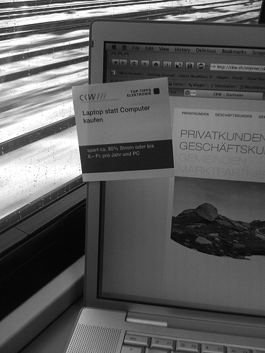
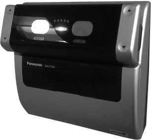
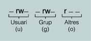

Seguretat lògica
La seguretat lògica és complementària respecte als elements de la seguretat passiva. El control de l’accés als equips informàtics requereix la verificació de la identitat d’una persona per tal de permetre-li l’accés a un lloc, dades i/o programes determinats. Aquestes mesures també formen part de la cadena de seguretat.
Hi ha estructures lògiques inventades per a la concreció dels drets que tindrà una persona que accedeix al sistema. Uns exemples són les matrius de control d’accés i les llistes de control d’accés. Prèviament a aplicar uns permisos determinats, però, cal autenticar la persona i la manera més habitual de fer-ho és per mitjà de contrasenyes.
Les contrasenyes poden ser molt efectives si són ben utilitzades. Amb l’aplicació d’una bona política de contrasenyes és té molt de guanyat. Cal dir que hi ha mètodes més robustos de protegir l’accés de possibles intrusos. Un dels mètodes més robustos que hi ha és l’ús de sistemes biomètrics.
Elements bàsics de control d'accés
En els sistemes informàtics, el control d’accés és una de les mesures més utilitzades per garantir la seguretat de la informació. Aquest mecanisme serveix per especificar qui o què (per exemple, un programa) pot accedir a cadascun dels recursos del sistema específic, i també el tipus d’accés que se li permet en cada cas.
El control d’accés d’un sistema s’engloba dins d’un context més gran en què hi ha involucrades les funcions següents:
- Autenticació: verificació de la identitat d’un usuari o d’una altra entitat del sistema.
- Autorització: la concessió d’un dret o d’un permís a una entitat del sistema per accedir a un recurs del sistema.
La figura mostra aquest esquema general en què l’usuari que vol accedir a un recurs s’ha d’autenticar primer per poder entrar al sistema. La funció d’autenticació determinarà si l’usuari pot passar o es queda fora. Posteriorment, la funció de control d’accés determinarà si l’usuari pot accedir al recurs del sistema que demana. Per fer-ho, consultarà la base de dades d’autorització, mantinguda per l’administrador del sistema, en què s’especifica quin tipus d’accés té cada usuari per a un recurs concret.
En la figura, la funció de control d’accés apareix com un sol mòdul. A la pràctica, això ho poden dur a terme diversos components que comparteixen aquesta funció de control.
Objectes, subjectes i drets d'accés
Un objecte és un recurs que té l’accés controlat. Normalment, un objecte és una entitat per emmagatzemar i/o rebre informació. Alguns exemples d’objecte són: registres, pàgines de memòria, fitxers, directoris i programes.
Un subjecte és una entitat capaç d’accedir a objectes. En general, el concepte de subjecte va lligat al de procés. Quan un usuari o aplicació vol accedir a un objecte, en realitat ho fa per mitjà d’un procés que representa l’usuari o aplicació concrets. Tot i així, és habitual parlar d’usuaris com a subjectes.
Els sistemes de control d’accés bàsics normalment defineixen tres classes de subjecte, amb diferents drets d’accés per a cada classe:
- Propietari: aquest podria ser el creador d’un recurs, com un fitxer o directori.
- Grup: a més dels privilegis assignats a un propietari, un grup concret d’usuaris també pot tenir privilegis d’accés a determinats recursos. En molts casos, un usuari pot pertànyer a diversos grups.
- Altres: un nombre més petit d’accessos es concedeix a usuaris que han entrat al sistema, però que no pertanyen a la categoria de propietari o de grup per a un recurs determinat.
Un dret d’accés indica de quina manera un subjecte pot accedir a un objecte.
Els drets d’accés poden incloure les accions següents:
- Lectura: un usuari pot visualitzar la informació d’un recurs donat (fitxer, directori, registre…). L’accés de lectura permet copiar o imprimir recursos.
- Escriptura: un usuari pot afegir, modificar o eliminar dades d’un recurs donat.
- Execució: un usuari pot executar programes específics.
- Esborrament: un usuari pot eliminar certs recursos com fitxers o registres.
- Creació: un usuari pot crear nous fitxers, registres o directoris.
Control d'accés discrecional
Hi ha diferents tipus de polítiques de control d’accés. Una política de control d’accés, que es troba plasmada en la base de dades d’autorització, determina quins tipus d’accés es permeten, en quines circumstàncies i per a qui.
El control d’accés discrecional (DAC, discretionary access control) és una política de control d’accés basada en la identitat del sol·licitant i en unes normes d’accés (autoritzacions) que indiquen el que poden o no poden fer els sol·licitants. El terme discrecional fa referència al fet que un subjecte pot tenir drets d’accés per donar a un altre subjecte drets d’accés per a un recurs concret.
Matriu de control d'accés
Una implementació del control d’accés discrecional és la matriu de control accés (taula). Les files d’aquesta matriu representen els subjectes del sistema, mentre que les columnes representen els objectes als quals es vol accedir. Una cel·la, és a dir, la intersecció entre una fila i una columna concretes, conté els drets d’accés per al subjecte i l’objecte que es creuen.
| Subjectes | Objectes | |||
|---|---|---|---|---|
| /home/albert | /home/berta | /home/carme | /etc/passwd | |
| Albert | Lectura, escriptura, cd | Lectura | ||
| Berta | Lectura, escriptura, cd | Lectura | ||
| Carme | Lectura, escriptura, cd | Lectura, escriptura, cd | Lectura, escriptura, cd | Lectura, escriptura |
A la pràctica, la matriu de control d’accés es descompon en estructures més senzilles i manejables per implementar en un sistema operatiu o base de dades. Hi ha dues possibles opcions:
- Descompondre la matriu en columnes i associar a cada objecte una llista de qui hi pot interactuar i com. Aquesta llista s’anomena llista de control d’accés (ACL, acces control list).
- Descompondre la matriu en files i associar a cada subjecte una llista del que pot fer. Els elements d’aquesta llista s’anomenen capacitats.
Llistes de control d'accés
Els sistemes Windows fan servir el mecanisme de llistes de control d’accés (ACL). Cada objecte del sistema: directoris, fitxers, recursos de xarxa compartits, etc., té una ACL incorporada. Aquesta ACL és una llista d’entrades que contenen un usuari o grup; una operació (com lectura o escriptura), i un permís (permetre o denegar).
Quan l’usuari provi de treballar amb un objecte, per exemple obrir un fitxer, el nucli del sistema operatiu comprovarà l’ACL de l’objecte per determinar si l’operació es permet o no. En cas que l’usuari o el grup al qual pertany no estiguin acreditats per accedir a aquell objecte, el sistema operatiu li denegarà automàticament l’accés al fitxer.
D’altra banda, els sistemes operatius de la família UNIX, com Linux i Mac OS X, utilitzen un sistema híbrid. Fan servir llistes de control d’accés perquè cada objecte porta la seva llista de permisos, però també fan servir capacitats, ja que pertànyer a un grup pot significar accedir a una sèrie de drets automàticament.
Política de contrasenyes
L’origen de les contrasenyes és molt anterior als sistemes informàtics. Es feia servir des de temps remots especialment en entorns militars per comprovar si algú pertanyia al bàndol amic o al bàndol contrari.
Quan un sentinella veia que s’acostava algun desconegut li deia una senya, que bàsicament era una pregunta o una frase. El desconegut havia de respondre una contrasenya, que era la resposta a la pregunta o frase formulada. Evidentment, calia posar molta cura perquè les contrasenyes no arribessin a orelles dels enemics.
En el món dels sistemes d’informació, la funcionalitat de les contrasenyes és bastant semblant: serveix per veure si algú que intenta accedir a una zona protegida és amic o enemic, o en lèxic informàtic usuari autoritzat o no autoritzat.
Les contrasenyes són el mètode més estès per impedir accessos no autoritzats vers sistemes o continguts dins un sistema. Són una eina que és molt econòmica i ben utilitzada pot ser molt efectiva. Ara bé, igual que succeïa en el món militar cal estar segurs que la contrasenya no arriba a orelles de possibles atacants.
Segons estudis, el mal ús de les contrasenyes és a la llista de les deu amenaces més habituals dels sistemes de seguretat. L’any 2002 una periodista es va fer famosa perquè va aconseguir accés al compte de correu de Saddam Hussein. No va necessitar grans coneixements de pirateria per accedir-hi.
Una contrasenya no és més que un conjunt de caràcters secrets que s’utilitzen com a procés d’autenticació.
El mal ús de les contrasenyes és una pràctica molt estesa. Els usuaris moltes vegades escullen contrasenyes fàcils de recordar, però que són alhora molt fàcils d’esbrinar. D’altres vegades, la contrasenya és molt robusta però està enganxada amb un adhesiu a la pantalla de l’ordinador.
Fer un bon ús de les contrasenyes és una tasca que implica tots els usuaris d’una organització, no solament el personal de seguretat. L’obligació del personal de seguretat és definir quines són les pautes que cal seguir mitjançant la definició d’una política de contrasenyes.
Una política de contrasenyes és un document que regula quines són les normes de creació de les contrasenyes, les normes de protecció de les contrasenyes i la freqüència de renovació de les contrasenyes.
Creació de contrasenyes correctes
Perquè una contrasenya sigui efectiva ha de ser robusta, això vol dir que ha de ser difícil d’esbrinar per un possible atacant. Contrasenyes com 1234 o el nom d’un familiar són exemples de contrasenyes dèbils.
Els responsables de seguretat han de vetllar per les contrasenyes que generin els usuaris. De vegades, es poden establir regles per impedir que un usuari generi una contrasenya dèbil com, per exemple, definir una longitud mínima.
Les contrasenyes es consideren febles si compleixen alguna d’aquestes característiques:
- Tenen menys de 10 caràcters.
- La contrasenya és una paraula que apareix en algun diccionari (sigui de l’idioma que sigui).
- La contrasenya és el nom d’algun familiar, amic, company de treball, mascota, personatge famós…
- La contrasenya és alguna dada personal com la data de naixement, adreça postal on es viu…
- La contrasenya segueix algun patró numèric o alfanumèric com aaabbb, 1234, qwerty…
Per tal que una contrasenya es consideri robusta ha de complir les característiques següents:
- Contenir tant majúscules com minúscules.
- Tenir text, valors numèrics i alfanumèrics.
- Tenir com a mínim 10 caràcters de longitud.
- No ha d’aparèixer a cap diccionari.
- No s’ha de basar en informació personal.
El problema que hi ha amb les contrasenyes robustes és que de vegades són difícils de recordar, amb la qual cosa acaben escrites en un tros de paper sota del teclat.
Com s'han de generar contrasenyes segures fàcils de recordar
Una tècnica per generar contrasenyes robustes és crear-les a partir d’una cançó o frase que ens sigui fàcil de recordar. Per exemple, si fem servir com a referència la frase: “Això és una manera de recordar una contrasenya” podem generar la contrasenya a partir de les inicials de cada paraula i canviar la paraula una pel nombre 1 i afegir-hi un caràcter alfanumèric al final: Ae1MdR1c!
Protecció de les contrasenyes
Les contrasenyes a més de ser robustes han d’estar ben protegides, ja que si arriben a mans de possibles atacants aquests poden burlar la seguretat de tot el sistema.
- 
- Perquè les contrasenyes siguin eficaces s'han de mantenir guardades en un lloc segur.
Hi ha molts mètodes pels quals els atacants poden esbrinar una contrasenya. Un mètode molt estès és el de l’enginyeria social en el qual, per exemple, un atacant truca a un usuari i li diu que és l’administrador de sistemes i li demana la contrasenya. Com que l’usuari treballa en una multinacional i no coneix en persona l’administrador de sistemes lliura la seva contrasenya a l’atacant, ja que es creu que és un administrador.
La política de contrasenyes ha d’establir de quina manera els usuaris han de protegir les contrasenyes i aplicar les regles. Les normes bàsiques de protecció de les contrasenyes són:
- No escriure mai la contrasenya en un correu electrònic.
- No dir la contrasenya per telèfon a ningú.
- No dir la contrasenya als companys d’empresa ni que siguin superiors directes.
- No parlar sobre les contrasenyes davant d’altres persones.
- No posar pistes de la contrasenya per fer-la més fàcil de recordar i alhora d’esbrinar.
- No escriure mai la contrasenya en formularis ni que siguin formularis del departament de seguretat.
- No dir la contrasenya a amics ni familiars.
- No dir a ningú la contrasenya quan es marxa de vacances.
- No escriure en cap paper la contrasenya per si de cas s’oblida.
- Canviar la contrasenya cada sis mesos com a mínim.
Sistemes biomètrics
De vegades, els requeriments quant a seguretat poden ser molt elevats com en el cas d’instal·lacions militars o governamentals. Quan la seguretat que ofereixen les contrasenyes no és suficient hi ha altres mecanismes que ofereixen més garanties com és el cas dels sistemes biomètrics.
La tecnologia que fan servir aquest tipus de dispositius és complexa i, per tant, són un mecanisme d’autenticació molt més car.
Els sistemes biomètrics verifiquen la identitat d’un usuari mitjançant l’anàlisi d’algun dels seus atributs físics o del seu comportament.
Un exemple de sistema biomètric basat en un atribut físic seria un lector d’empremtes dactilars. Aquests sistemes basen el seu criteri de decisió en alguna cosa que l’usuari és.
En canvi, una tauleta electrònica sobre la qual l’usuari escriu la seva signatura és un sistema biomètric basat en el comportament. Aquests sistemes basen el seu criteri de decisió en alguna cosa que l’usuari fa.
Els sistemes biomètrics que basen el criteri de decisió en algun patró de comportament tenen el problema que aquests patrons poden canviar al llarg del temps o que poden ser falsificats per atacants.
La manera de funcionar dels sistemes biomètrics és que fan un escaneig d’un patró físic o de comportament de l’usuari i el comparen amb una mostra model que tenen enregistrada. Si les dues mostres es consideren iguals llavors l’autenticació és correcta.
Els usuaris s’han de donar d’alta en els sistemes biomètrics. Durant aquest procés, el sistema biomètric recollirà una mostra del patró de l’usuari que servirà com a referència per a intents d’autenticació posteriors.
Els sistemes biomètrics, com qualsevol sistema, no són infalibles i pot ser que tinguin certs errors durant el procés d’autenticació.
Hi ha dos tipus d’errors que poden cometre els sistemes biomètrics: els falsos positius i els falsos negatius.
Un fals positiu es produeix quan el sistema accepta un impostor que hauria d’haver estat denegat.
Un fals negatiu es produeix quan el sistema denega l’accés a un usuari que hauria d’estar acceptat.
Tipus de sistemes biomètrics
En el mercat hi ha diferents tipus de sistemes biomètrics en funció del patró de l’usuari en el qual es basen per a l’autenticació. Els sistemes més comuns són:
- Lectors d’empremtes dactilars: les empremtes dactilars són formades pel relleu que es troba en els dits de la mà. Aquesta és una característica única per a cada persona.
- Lectors del palmell de la mà: el palmell de la mà conté informació que varia d’individu en individu. Aquesta informació inclou les empremtes dactilars i altres dades fisiològiques.
- Lectors de retina: aquests sistemes llegeixen el patró format pels vasos sanguinis que es troben a la retina ocular. Es fa servir una càmera que projecta un feix de llum vers l’ull i captura el patró.
- Lectors d’iris: l’iris és la porció de l’ull acolorida que envolta la pupil·la. L’iris conté molta informació com ara anells, colors… Aquests patrons són capturats per una càmera i es poden fer servir per identificar un usuari.
- Lectors facials: un sistema de reconeixement facial pot tenir en compte molts atributs com l’estructura òssia, la distància entre els ulls, la forma de la barbeta…
- 
- Els sistemes biomètrics basats en la lectura de la retina són una eina molt fiable com a mesura d'autenticació.
Autenticació d'usuaris
Perquè un usuari accedeixi a un recurs d’un sistema informàtic, prèviament cal que demostri que és qui diu que és, tingui les credencials necessàries i se li hagin donat els drets o privilegis per dur a terme les accions que demana.
La identificació és una manera d’assegurar-se que un subjecte (usuari o procés) és l’entitat que diu que és. La identificació pot consistir en un nom d’usuari o un número de compte. Per ser autenticat com cal, el subjecte també ha de proveir alguna dada addicional com, per exemple, una contrasenya, un atribut anatòmic o algun altre tipus de prova.
Un cop l’usuari ha estat identificat i autenticat, el sistema ha de comprovar si té drets per accedir al recurs que demana. Per fer això, el sistema utilitzarà algun mecanisme de control, com ara una matriu de control d’accessos. Si el sistema determina que el subjecte té accés al recurs, autoritzarà el subjecte; en cas contrari, li denegarà l’accés.
Identificació
Determinar la identitat en seguretat informàtica té tres aspectes clau:
- Unicitat: en un sistema cada individu ha de tenir un identificador únic. L’empremta digital o l’escaneig de la retina es poden considerar elements únics per determinar la identitat d’un subjecte.
- No descriptiva: cap part de la credencial no ha d’indicar la finalitat del compte. Per exemple, un identificador d’usuari no hauria de ser webadmin, superusuari o gerent.
- Expedició: els elements proveïts per una altra autoritat reconeguda per demostrar la identitat d’un subjecte. El document nacional d’identitat és un tipus d’element de seguretat que es consideraria una forma d’expedició d’identificació.
A més, en un sistema concret és recomanable establir un sistema d’identificadors estàndard. Per exemple, els noms d’usuari sempre tindran de la forma següent: de primer, el nom, després, un punt i, a continuació, el primer cognom, sense caràcters ASCII estès (accents, enyes…).
Autenticació
Un cop el subjecte s’ha identificat, cal que s’autentiqui, és a dir, cal que demostri que és qui diu que és. Hi ha tres factors que s’utilitzen per a l’autenticació: alguna cosa que una persona sap (autenticació per coneixement), alguna cosa que una persona té (autenticació per possessió) i alguna cosa que una persona és o fa (autenticació per característica).
- L’autenticació per coneixement, com una contrasenya o una combinació de caixa forta, normalment és la manera més econòmica d’implementar l’autenticació. L’inconvenient principal és que persones no autoritzades puguin esbrinar la informació secreta i accedir igualment al sistema.
- L’autenticació per possessió, com una clau o targeta d’accés, s’utilitza sovint per accedir a instal·lacions, però també pot ser útil per autenticar sistemes. El problema apareix quan algú perd la seva propietat o la hi roben, cosa que es podria convertir en un accés no autoritzat.
- L’autenticació per característica es basa en un dels atributs físics d’una persona. Els sistemes biomètrics estàtics utilitzen atributs físics únics, com l’empremta digital o la retina per autenticar els usuaris (alguna cosa que l’usuari és). Els sistemes biomètrics dinàmics reconeixen els usuaris per la veu, les característiques de l’escriptura (alguna cosa que l’usuari fa).
- Una autenticació multifactor utilitza dos o tres factors d’autenticació i assegura un nivell més alt de seguretat. En general, el tipus d’autenticació multifactor més utilitzada és l’autenticació de dos factors. Un exemple seria aquest: un usuari vol accedir a un sistema i per fer-ho ha d’indicar alguna cosa que sap (contrasenya) i utilitzar alguna cosa que té (targeta magnètica). Una altra possibilitat podria ser una contrasenya més un atribut físic (escaneig de la retina).
Autorització
El mecanisme d’autenticació permet comprovar la identificació d’un usuari perquè accedeixi al sistema o a un recurs concret. Un cop dins, però, l’usuari només podrà fer determinades accions o accedir als recursos als quals se li ha donat permís.
L’administrador del sistema autoritza els usuaris a fer determinades tasques. Així, l’administrador té el màxim control possible del sistema i restringeix l’accés a certs recursos i limita allò que pot fer cada tipus d’usuari. Suposeu que l’usuari Joan s’ha identificat i autenticat correctament i ja és dins del sistema, accedeix a un fitxer de text i prova d’obrir el document. Abans que li aparegui per pantalla, el sistema comprovarà que l’usuari Joan té autorització per accedir al fitxer que demana. Si té aquesta autorització, podrà veure el contingut de l’arxiu; en cas contrari, se li mostrarà un missatge d’error que digui que no hi té accés.
Criteris d'accés
Per facilitar a l’administrador del sistema la tasca d’autoritzar l’accés als recursos, es poden establir diferents criteris d’accés mitjançant l’ús de rols, grups, localitzacions, hores d’accés i tipus de transaccions.
S’utilitzen els rols quan es volen donar permisos a un tipus d’usuari que fa una tasca concreta. Aquest rol es basa en un tipus de feina o funció. Per exemple, un treballador que faci d’auditor en una empresa només requerirà accés de lectura a qualsevol transacció que es faci. Aquest rol no necessitarà privilegis per modificar o esborrar dades.
Els grups van bé quan es tenen diversos usuaris amb característiques semblants que requereixen l’accés a certs recursos i a certes dades. Ajuntar aquests usuaris en un únic grup i donar-los els permisos d’accés corresponents al grup és més senzill i efectiu que fer-ho individu per individu. En el cas d’un institut, es poden crear dos grups diferents: alumnat i professorat. Els directoris i els fitxers de les assignatures seran accessibles en mode lectura per als dos grups, mentre que només el grup de professors tindrà privilegis per modificar o esborrar dades.
La localització de l’usuari que vol accedir a un recurs és un altra manera eficaç de controlar l’accés al sistema. Aquesta localització pot ser física, només es pot accedir a un recurs si físicament ens trobem al mateix lloc, o lògica, normalment tenint en compte l’adreça de l’ordinador des d’on s’accedeix. Un exemple de localització lògica podria ser el següent: configureu un dels servidors de bases de dades de tal manera que només es poden fer consultes des de les adreces IP dels ordinadors de l’empresa.
L’hora d’accés és un altre mecanisme de seguretat adient per controlar l’accés al sistema. Aquest criteri permet establir les franges horàries en què es pot accedir a un recurs concret. Suposeu que teniu un servidor web per fer tràmits administratius mitjançant formularis. Es podrien configurar unes hores d’accés de vuit del matí a vuit del vespre per poder-los utilitzar. Fora d’aquest horari, no seria possible introduir cap més dada. D’aquesta manera, es podrien evitar possibles atacs que es produïssin fora de l’horari administratiu en dies feiners.
Finalment, les restriccions per tipus de transacció permeten controlar les dades a les quals s’accedeix durant un certs tipus de funcions i quines accions es poden dur a terme amb les dades. Quan accediu al vostre compte bancari via web, podreu veure el saldo que us queda però no podreu fer cap transferència mentre no passeu un segon nivell de seguretat.
Control d'accés als recursos i d'execució de tasques
Per garantir la seguretat d’un sistema informàtic, els usuaris s’han d’identificar i d’autenticar correctament per poder-hi accedir. Un cop dins, però, els usuaris només podran accedir als recursos per als quals se’ls ha donat permís, és a dir, els que estan autoritzats a utilitzar. D’una manera semblant, els usuaris només les tasques per a les quals se’ls ha donat dret.
Permisos
L’administrador del sistema pot decidir i configurar l’entorn perquè determinats usuaris no puguin veure, modificar o eliminar certs arxius o directoris, per exemple. També hi ha la possibilitat de donar certs permisos a grups d’usuaris amb característiques similars. Així, l’administrador del sistema s’estalviarà temps en donar els mateixos permisos a tot un conjunt d’usuaris (grup) en comptes de fer-ho un per un (usuari).
Hi ha diversos mecanismes per controlar qui està autoritzat a utilitzar un recurs i qui no. En general, el sistema operatiu emmagatzema per a cada recurs els usuaris i els grups que el poden fer servir i en quines condicions (lectura, escriptura, execució…). Un mecanisme per controlar els accessos consisteix a utilitzar llistes de control d’accés (ACL).
Els permisos en entorns tipus UNIX
Quan feu una llista en format llarg del contingut d’un directori en un sistema de tipus UNIX, podeu veure els permisos de cada fitxer o subdirectori.
> ls -l total 80 -rw-rw-r-- 1 joan profes 31744 Feb 21 17:56 seguretat.doc -rw-rw-r-- 1 joan profes 41472 Feb 21 17:56 freebsd.pdf drwxrwxr-x 2 joan profes 4096 Feb 25 11:50 materials
Cada línia correspon a un arxiu o subdirectori, el primer caràcter indica el tipus d’objecte: arxiu normal (-), directori (d), enllaç simbòlic (l), etc.
Tot seguit hi ha nou caràcters que representen els permisos d’accés a l’arxiu o al directori en qüestió:
- Tres caràcters per a l’usuari propietari de l’arxiu o directori (user).
- Tres caràcters per al grup d’usuaris de l’arxiu o directori (group).
- Tres caràcters per a la resta d’usuaris, és a dir, que no són ni l’usuari propietari ni pertanyen al grup de l’arxiu o directori (others).
En cada grup de tres caràcters, el primer correspon al permís de lectura (r, read), el segon al permís d’escriptura (w, write) i el tercer al permís d’execució (x, execution). Si un caràcter conté un guió significa que no es té el permís corresponent activat.
Després dels permisos, hi ha un nombre enter que representa el nombre d’enllaços forts a l’arxiu o directori. Seguidament trobem l’usuari i el grup propietaris de l’arxiu o directori.
En la línia següent podeu veure que l’arxiu seguretat.doc pertany a l’usuari Joan, del grup profes.
rw-rw-r-- 1 joan profes 31744 Feb 21 17:56 seguretat.doc
Si observeu amb detall els permisos, veureu que l’usuari Joan té permís de lectura ® i d’escriptura (w) sobre l’arxiu. Els usuaris que pertanyen al grup profes també tenen permís de lectura ® i d’escriptura (w). La resta d’usuaris només disposa de permís de lectura ®. En canvi, ningú no té permís d’execució sobre l’arxiu (en ser un document tampoc no té sentit que estigui activat aquest permís).
- 
El permís d’execució en directoris es fa servir per permetre-hi o impedir-hi l’accés. Si traieu el permís d’execució a un directori per a tots els usuaris, ningú no hi podrà entrar.
Els permisos bàsics que pot tenir un arxiu són tres: lectura, escriptura i execució (rwx). Aquests permisos són definits per a cadascuna de les categories d’usuaris: usuari propietari, grup i la resta. Per tant, cada arxiu disposa de nou permisos definits: tres per a l’usuari, tres per al grup i tres per a la resta.
L'ordre chmod
Per poder canviar els permisos en sistemes tipus UNIX s’utilitza l’ordre chmod (change mode). En general, permet indicar quins permisos voleu afegir a un arxiu o directori concrets o treure’n. Hi ha diverses maneres d’utilitzar l’ordre chmod. Per obtenir-ne una ajuda completa podeu consultar la pàgina d’ajuda corresponent (man chmod).
La manera més bàsica d’utilitzar chmod consisteix a indicar primer el subjecte afectat (usuari, grup o altres) seguit dels permisos que es volen afegir o restringir. Finalment, s’indica l’arxiu o directori al qual es volen canviar els permisos.
> chmod u=rwx freebsd.pdf
Afegeix tots els permisos (=rwx) a l’usuari propietari (u) de l’arxiu freebsd.pdf.
> chmod ugo-r materials
Treu el permís de lectura (-r) a tots els usuaris (ugo: user, group, others) del directori materials.
> chmod o+w freebsd.pdf
Afegeix el permís d’escriptura (+w) per a la resta d’usuaris (o) a l’arxiu freebsd.pdf.
Només l’administrador del sistema o l’usuari propietari pot modificar els permisos d’un arxiu o directori.
L'ordre chown
Quan es crea un arxiu, s’hi assigna automàticament un usuari i un grup propietaris. L’usuari és el que ha creat l’arxiu i el grup és el grup principal al qual pertany.
Per motius pràctics, us pot interessar canviar l’usuari propietari d’un arxiu o directori. Potser heu creat l’arxiu com a administrador del sistema (usuari root), però voleu que estigui disponible per a algun usuari o grup concrets.
Suposeu que heu creat l’arxiu qualificacions.doc com a usuari root i en voleu canviar el propietari.
- rw-rw-r– 1 root root 4292 Mar 11 22:46 qualificacions.doc
Amb l’ordre chown (change owner) ho podeu fer. El primer paràmetre és l’usuari que voleu com a nou propietari i el segon paràmetre és el nom de l’arxiu o directori en qüestió.
> chown joan qualificacions.doc > ls -l -rw-rw-r-- 1 joan root 4292 Mar 11 22:46 qualificacions.doc
Cal tenir en compte que només el propietari d’un arxiu pot configurar un propietari diferent (a més de l’administrador).
L'ordre chgrp
Per canviar el grup propietari d’un arxiu o directori disposeu de l’ordre chgrp (change group). El seu funcionament és semblant al de l’ordre chown, però aquest cop cal indicar primer el nou grup al qual pertanyerà l’arxiu.
> chgrp profes qualificacions.doc > ls -l -rw-rw-r-- 1 joan profes 4292 Mar 11 22:46 qualificacions.doc
Novament, només l’administrador del sistema i el propietari de l’arxiu poden especificar un nou grup propietari.
Execució de tasques mitjançant drets d'usuari
Així com els permisos permeten accedir a diferents recursos, els drets d’usuari permeten dur a terme determinades tasques. Gràcies als permisos podreu evitar que certs usuaris modifiquin o eliminin un arxiu. Amb els drets d’usuari us assegurareu que només les persones adequades poden reiniciar el sistema, canviar l’hora i data del sistema o donar de baixa usuaris, per exemple.
L’administrador d’un sistema informàtic acostuma a tenir tots els drets d’usuari activats i, per tant, pot fer qualsevol acció o tasca. Precisament, és l’administrador qui assigna els drets d’usuari a altres usuaris i grups donats d’alta.
Lògicament, cada sistema operatiu gestiona els drets d’usuari a la seva manera. En sistemes Windows, es poden consultar i modificar des de les Eines administratives: s’ha d’escollir primer l’opció Directives locals i després l’opció Assignació de drets d’usuari. En la taula podeu veure alguns dels drets d’usuari que s’utilitzen en un sistema Windows 2003.
| Dret d’usuari | Descripció |
|---|---|
| Accedir a aquest ordinador des de la Xarxa. | Connectar mitjançant la Xarxa a un ordinador. |
| Fer còpies de seguretat de fitxers i directoris. | Fer còpies de seguretat del sistema. Aquest dret d’usuari està per sobre dels possibles permisos dels recursos. És a dir, tot i no tenir permís de lectura, es podran llegir els arxius per fer-ne una còpia de seguretat. |
| Canviar l’hora del sistema. | Configurar l’hora i/o la data del rellotge intern de l’ordinador. |
| Depurar programes. | Depurar aplicacions per trobar possibles errades de programació. |
| Forçar apagat des d’un sistema remot. | Permet que un ordinador sigui apagat o reiniciat des d’un sistema remot. |
| Apagar el sistema. | Permet apagar localment el servidor de Windows 2003. |
| Prendre propietat de fitxers o d’altres objectes. | Pren propietat de fitxers, directoris i altres objectes que no són propietat d’altres usuaris. |
Registres d'usuaris, incidències i alarmes
Hi ha molts tipus de registres que poden contenir tot tipus d’informació. Normalment, la majoria d’aplicacions amb un mínim de complexitat guarda registres per poder tenir informació en casos de fallida.
En aquest punt ens interessa conèixer els registres que tenen relació amb la seguretat informàtica. Revisar el registre de l’aplicació “calculadora” pot resultar molt entretingut, però no aporta gaire informació des del punt de vista de la seguretat.
La primera tasca que cal tenir en compte és identificar quines són les aplicacions crítiques que cal avaluar en els nostres sistemes d’anàlisi de registres. Tenir un volum excessiu de registres pot ser problemàtic perquè processar la informació és una tasca molt laboriosa.
Guardar informació de registres que no es revisa és tan poc útil com no guardar-la. Les polítiques de seguretat defineixen qui és el responsable de validar la informació i amb quina freqüència ha de fer-ho.
Des del punt de vista de la seguretat, els registres que tenen més rellevància són:
- Registres dels sistemes operatius
- Registres del programari de seguretat
Registres dels sistemes operatius
Hi ha gran varietat de sistemes operatius depenent del dispositiu per al qual estan destinats. Hi ha sistemes operatius per a servidors, per a equips de client, per a estacions de treball, per a dispositius de xarxa (encaminadors, commutadors…).
La gran majoria de sistemes operatius guarda registres dels esdeveniments que succeeixen sobre el sistema en què operen (figura). La informació que registren es pot dividir en dues classes: esdeveniments del sistema i esdeveniments de l’usuari.
Els esdeveniments del sistema són accions o operacions produïdes pels components del mateix sistema operatiu com, per exemple, apagar el sistema o iniciar un servei. Normalment, totes les accions que produeixen errors són enregistrades. En canvi, els esdeveniments d’usuari són conseqüència d’accions produïdes per un usuari.
Tot i que la informació que es registra depèn de la configuració del sistema operatiu que ha fet l’administrador, la llista següent mostra els esdeveniments que hi són típicament recollits:
- Rendiment del sistema
- Intents d’accés al sistema (fallits i satisfactoris)
- Identitat dels usuaris que han accedit al sistema
- Bloqueig d’usuaris (després d’un nombre repetit d’intents d’accés fallits)
- Data i temps dels intents d’accés al sistema
- Utilització d’eines d’administració del sistema
- Dispositius utilitzats
- Peticions d’alteració de fitxers de configuració
Aquesta informació pot resultar molt valuosa per analitzar si un sistema està sent atacat. Així, doncs, per exemple, un decrement molt accentuat del rendiment pot ser un indicador que hi ha algun virus o cavall de Troia.
Sintaxi dels registres
La manera com es mostra la informació pot variar molt d’un sistema operatiu a un altre. Cal un cert coneixement del sistema operatiu per poder interpretar la informació que apareix en el registre. A continuació, es mostra un exemple de registre de Windows:
Event Type: Success Audit Event Source: Security Event Category: (1) Event ID: 517 Date: 362009PM Time: 2:56:40 User: Admin\SYSTEM Computer: KENT Description: The audit log was cleared Primary User Name: SYSTEM Primary Domain: Admin Primary Logon ID: (0x0,0x3F7) Client User Name: userk Client Domain: KENT Client Logon ID: (0x0,0x28BFD)
Registres del programari de seguretat
Cada vegada hi ha més programari per protegir la seguretat dels sistemes informàtics. Aquest tipus de programari enregistra qualsevol informació que pugui ser d’utilitat.
La majoria de programari de seguretat es configura perquè si es produeixen certs tipus d’esdeveniments a més a més d’enregistrar-los es dispari una alarma que enviï un correu electrònic a l’administrador del sistema.
Entre el programari de seguretat que pot generar registres cal fer menció especial a:
- Antivirus: guarden registre de virus, cavall de Troia i altre programari maliciós detectats. També enregistra desinfeccions de fitxers i quarantenes (bloquejar el fitxer) aplicades. De vegades, també enregistra quan es produeixen actualitzacions de les bases de dades de virus i escanejos del sistema.
- Encaminadors: són dispositius de xarxa encarregats de fer arribar la informació a diferents equips. Normalment, es configuren per permetre o bloquejar determinats tipus de tràfic de dades. Cada vegada que es bloqueja tràfic de xarxa que pugui ser perillós s’enregistra l’esdeveniment.
- Tallafocs: de la mateixa manera que els encaminadors, permeten o bloquegen determinats tipus d’accions basats en una política de decisió. Els tallafocs guarden registre de tota l’activitat que monitoren.
- Servidors intermediaris ( proxies ): són servidors intermediaris mitjançant els quals s’accedeix als llocs web. Els usuaris en comptes de fer peticions directament, el servidor intermediari les fa per ells. Es poden configurar per bloquejar l’accés a determinades pàgines web que puguin ser perilloses. Es guarda registre de totes les peticions que arriben al servidor intermediari.
- Programari d’accés remot: de vegades hi ha empreses que permeten accedir als sistemes des de fora de les instal·lacions mitjançant l’ús de programari d’accés remot. Els atacants poden intentar fer servir aquesta porta d’entrada per accedir als sistemes informàtics. El programari d’accés remot enregistra tots els intents d’accés per poder detectar si usuaris no autoritzats intenten accedir al sistema.
-

- A l'actualitat molts usuaris tenen encaminadors a les xarxes domèstiques perquè diversos equips pugin connectar-se a Internet.
Gestió de registres
Gestionar correctament els registres és clau per poder extreure la informació necessària, sobretot quan ens enfrontem a grans volums d’informació.
Per tal que la feina de gestió dels registres sigui més senzilla és necessari que els administradors configurin correctament els sistemes. Per a una gestió i configuració correctes dels registres cal tenir en compte el següent:
- Evitar tenir massa fonts de registres: si hi ha massa registres dispersos en servidors per tota l’organització la gestió es dificulta.
- Inconsistència de les dades: de vegades per augmentar l’eficiència només s’enregistren les dades més rellevants. Això pot representar un problema a l’hora de rastrejar incidents si les dades no són consistents. Un exemple seria que un registre emmagatzemi la IP però no el nom d’usuari. mentre que un altre enregistri el nom d’usuari però no la IP.
- Inconsistència temporal: una de les dades importants que s’ha d’enregistrar és la data i l’hora de quan succeeix un esdeveniment. La majoria de vegades la font horària que es fa servir és l’hora del servidor en què es troba el registre. Si tots els sistemes no estan sincronitzats temporalment això pot crear confusions en analitzar els registres.
- Inconsistència de formats: la informació que es desa als registres es pot trobar en formats molt diferents. De vegades, en XML, d’altres, en valors separats per comes, d’altres, en bases de dades… Tenir massa formats diferents augmenta molt la complexitat de la gestió dels registres.
- Informació sensible: a l’hora de configurar quina informació s’enregistra no és pot ometre la informació especialment sensible com l’activitat dels comptes amb privilegis de root o administrador.
- Utilitzar eines de gestió de registres: analitzar els fitxers de registre (logos) manualment és una tasca que requereix molt temps. De vegades, resulta rendible adquirir una eina de gestió de registres.
Protecció dels registres
Si un atacant atracador accedeix a la caixa forta d’un banc un cop perpetri el robatori farà tot el possible per eliminar les pistes del crim. El mateix s’aplica per als fraus informàtics, l’atacant intentarà esborrar qualsevol registre que el pugui incriminar. Sense la informació dels registres no és possible adonar-se que s’ha produït un atac.
La informació que hi ha als registres ha d’estar protegida. Només certes persones (administradors o personal de seguretat) ha de poder veure, modificar o esborrar la informació dels registres.
La integritat s’ha d’assegurar mitjançant mètodes criptogràfics, de manera que si algú altera les dades del registre es pugui detectar.
De vegades, pot ser convenient xifrar la informació dels registres per tal de garantir-ne la confidencialitat. També es pot enregistrar aquesta informació en discos de CD-ROM per evitar la pèrdua o l’alteració de les dades enregistrades.